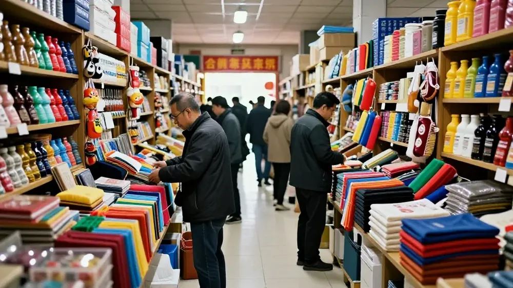
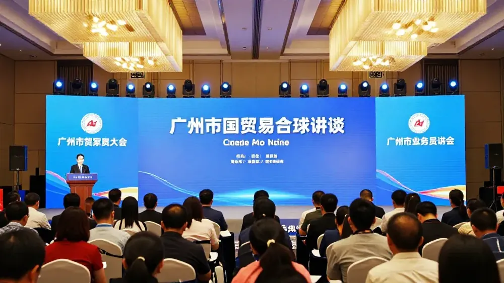
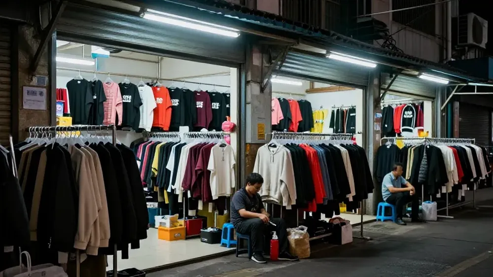
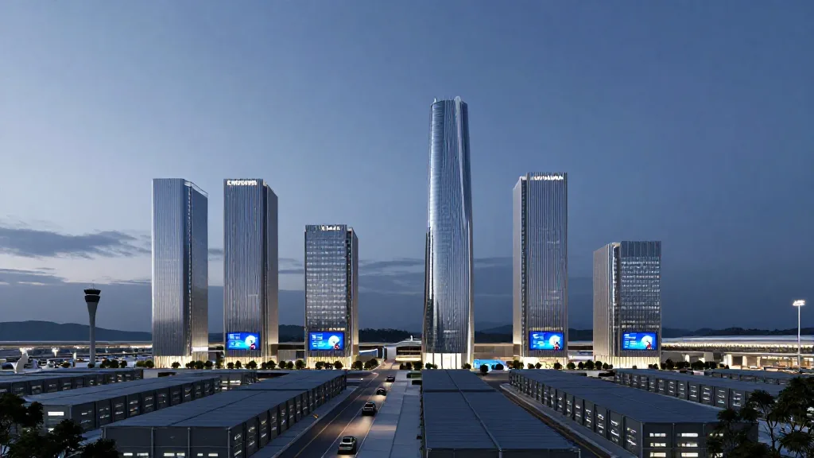

【鄭哥點評】
廣州國際商業港不只是花都的一塊地。它是廣州對“義烏模式”的一次正面回應。千年商都能不能補上服務鏈這一課，決定的不只是一個項目的成敗，而是華南外貿貨源組織方式會不會被重寫。
廣州終於坐不住了
2026年8月25日，廣州國際商業港首開區北地塊正式掛牌，規劃總面積9.86平方公里，相當於1400個標準足球場。
消息一出，廣州外貿圈炸開了鍋。有人興奮，有人懷疑，更多人帶着一種複雜的心情在觀望——畢竟，這座城市已經太久沒有在商貿領域搞出這麼大動靜了。
但真正讓這件事變得意味深長的，不是9.86平方公里這個數字，而是一個問題：爲什麼是現在？

圖片由 AI輔助創作（Z-Image-Turbo）
一個省城向一個縣城“取經”
2025年，義烏所在的浙江金華市，外貿進出口首次突破萬億大關，達到1.05萬億元，成爲全國第8座“萬億外貿之城”。僅義烏一個縣級市，進出口規模就達到8300多億元，同比增長25.1%，規模超過全國25個省份。
同期，廣州外貿規模仍居全國前列，但增速與金華、義烏的差距，讓“千年商都”感受到了實實在在的壓力。
更耐人尋味的是廣州的態度。今年6月底，廣州市委書記馮忠華帶隊赴浙江調研，兩天時間輾轉杭州、金華、嘉興三座城市，專程走進義烏全球數貿中心、雲驛小鎮。7月初，廣州市政府禮堂又舉辦了一場“小商品到大品牌”穗義商貿雙城對話會，508家專業市場的經營者代表與義烏來的企業家們面對面交流。
一個GDP超3萬億的一線城市，兩次組團向一個縣級市“取經”。這本身就說明了很多問題。

圖片由 AI輔助創作（Z-Image-Turbo）
廣州的“大而不強”，到底弱在哪？
廣州擁有508家專業市場，經營面積超1500萬平方米，匯聚商戶約16萬家，年商貿交易額突破1.5萬億元。流花服裝、站西鞋包、獅嶺皮具、中大紡織——每一個名字背後都是千億級的產業集羣。
但規模大，不等於能力強。
今年廣州市兩會上，九三學社廣州市委員會的一份提案直戳痛點：廣州多數專業市場停留在低附加值代工和批發環節，未能凸顯國際性樞紐和供應鏈中心優勢，產業協同創新與國際化運營能力薄弱，未形成規模效應與全鏈條生態。
中山大學港澳珠江三角洲研究中心副主任林江說得更直白：廣州很多批發市場長期依賴檔口經濟、物業出租，市場管理者更像房東，商戶更像個體的經營者，組織化、平臺化的程度不足，缺少統一的品牌、交易規則、數字系統、信用體系以及統一的供應鏈服務。
這就是問題的本質。義烏的核心競爭力從來不是“低價貨源”，而是它構建了一套完整的貿易服務體系——小單交易、拼箱便利、外貿代理成熟、市場採購貿易方式便捷。中小商戶從接單到報關、從物流到結算，每個環節都有專業服務商接住，試錯成本極低。
廣州恰恰缺的不是貨，缺的是把貨變成生意的那一整套“服務鏈”。廣州強在製造，弱在服務鏈——物流、通關、跨境培訓、數字化運營各板塊各自獨立，中小製造企業想出海，試錯成本高、運營效率偏低。

圖片由 AI輔助創作（Z-Image-Turbo）
商業港要解的是什麼題？
理解了這層背景，再來看廣州國際商業港的規劃，思路就清晰了。
項目選址花都區、白雲國際機場西北片區，可實現一站接駁白雲機場，兩站直達廣州北站，30分鐘通達珠江新城、金融城等核心商務區，100分鐘輻射大灣區主要城市。這種區位條件，讓“空港+商貿”的組合有了落地的物理基礎。
但更關鍵的是業態設計。廣州國際商業港要統籌佈局會展貿易、數字商貿、總部經濟、跨境貿易、文商旅融合等多元業態，目標是建成“專業化、智能化、一站式、樞紐型的大型實體商貿平臺”。廣州市主要領導在調研中明確要求，要聯動打造“永不落幕的廣交會”。
這意味着，廣州國際商業港不是要再造一個“大市場”，而是要造一個“平臺”——把廣州分散在各區的專業市場資源，通過一個高能級的載體整合起來，植入義烏式的貿易服務生態。
廣州已經在做一些嘗試。流花服裝市場自建了跨境電商平臺LIUHUAMALL.com，提供產品展示、渠道搭建、報關、物流、結匯等全鏈條服務，目前平臺入駐商戶1000多家，2025年流量突破1億人次。今年8月，全省首個鞋服跨境貿易數字平臺在廣州白雲石井申澤商貿城啓動。南沙也落地了兩大外貿服務平臺，推動傳統專業市場向陽光化、數字化、平臺化轉型。
這些動作說明，廣州並非沒有意識到問題，也並非沒有在行動。但“點狀突破”和“系統重構”之間，還有很長的路要走。

圖片由 AI輔助創作（Z-Image-Turbo）
商業港能複製義烏嗎？
坦率地說，不能。
義烏的成功是幾十年積累的結果，它的核心競爭力不是某一條政策或某一個平臺，而是一整套被反覆打磨過的貿易服務生態——從市場採購貿易方式到拼箱物流體系，從外貿代理到信用擔保，每一個環節都經過無數中小商戶的實際檢驗和迭代優化。這種生態的形成，靠的是時間和密度，不是靠規劃圖紙。
廣州要走的，必然是一條不同的路。義烏服務的主要是中小商戶和中小採購商，而廣州需要同時服務大型企業、中小外貿商戶和新興市場採購商。廣州的產業腹地——珠三角雄厚的製造業基礎——也遠比義烏所在的浙中地區更加多元和複雜。
這意味着，廣州國際商業港的難度不是“會不會建”，而是“建成之後能不能真正跑起來”。一個平臺能不能活，取決於它能不能讓入駐的商戶賺到錢。廣州需要的不是在花都畫出一塊9.86平方公里的地，而是在這塊地上真正建立起一套讓中小商戶“敢出海、能出海、出海能賺錢”的服務體系。
從目前公開的信息來看，首開區北地塊是商業商務用地，宗地面積26.72公頃，計容建築面積爲570351平方米。土地要素保障已經到位，但制度層面的創新——比如市場採購貿易方式的落地、跨境結算的便利化、多語種服務的配套——纔是決定這個項目成敗的關鍵。
不只是廣州的事
如果把視野再拉遠一點，廣州國際商業港的意義可能超出廣州本身。
2026年，廣州“十五五”規劃綱要提出，展望2035年，地區生產總值比2023年翻一番，實現“再造新廣州”的目標。在一個外貿增速被內陸城市和縣級市快速追趕的時代，廣州需要找到新的增長引擎。
更深層的意義在於，廣州的轉型嘗試，實際上代表了中國傳統商貿城市在數字化和全球化雙重衝擊下的一條突圍路徑。當電商和直播帶貨不斷擠壓傳統批發的生存空間，當東南亞和中東的新興市場採購商對供應鏈服務提出更高要求，“檔口經濟”的舊模式已經走到了盡頭。
廣州能不能走通這條路，對其他城市有重要的參照價值。但前提是，這座城市能否真正放下“千年商都”的歷史包袱，像三十年前的義烏那樣，從零開始構建一套真正服務於中小商戶的貿易服務體系。
[Hany's take]
The Guangzhou International Commercial Port is not just a plot of land in Huadu. It is Guangzhou's straight answer to the "Yiwu model". Whether a city that has been trading for a thousand years can finally fix its service chain decides more than the fate of one project — it decides whether the way South China's export goods are organised is about to be rewritten.
Guangzhou finally can't sit still
On 25 August 2026, the north plot of the first phase of the Guangzhou International Commercial Port was officially put on the market, with a planned total area of 9.86 square kilometres — about 1,400 standard football pitches.
The moment the news came out, Guangzhou's export circles boiled over. Some were excited, some sceptical, and more of them were watching with mixed feelings — after all, this city had not made this much noise in trade for a very long time.
But what really makes this meaningful is not the number 9.86 square kilometres. It is a question: why now?
圖片由 AI輔助創作Image by AI
A provincial capital going to a county town to learn
In 2025, Jinhua in Zhejiang — the prefecture-level city that Yiwu belongs to — pushed its foreign trade in goods past the one-trillion mark for the first time, reaching 1.05 trillion yuan and becoming the country's eighth "trillion-yuan trade city". Yiwu alone, a county-level city, hit over 830 billion yuan in imports and exports, up 25.1 per cent year on year — bigger than 25 provinces in China.
Over the same period Guangzhou's trade volume still ranked near the top nationally, but the gap in growth rates against Jinhua and Yiwu is a real pressure for a place that calls itself the merchant capital of a thousand years.
What is more telling is Guangzhou's attitude. At the end of June this year, Feng Zhonghua, secretary of the Guangzhou municipal party committee, led a team to Zhejiang, spending two days moving through Hangzhou, Jinhua and Jiaxing, and making a point of visiting the Yiwu Global Digital Trade Centre and Yunyi Town. In early July, the Guangzhou municipal government hall hosted a "from small commodities to big brands" Guangzhou–Yiwu twin-city trade dialogue, where representatives of 508 specialised markets sat face to face with entrepreneurs who had come from Yiwu.
A first-tier city with a GDP above 3 trillion yuan sent two delegations to learn from a county-level city. That alone says a great deal.
圖片由 AI輔助創作Image by AI
Guangzhou is big but not strong — where exactly is it weak?
Guangzhou has 508 specialised markets, more than 15 million square metres of operating space, roughly 160,000 merchants and an annual trade turnover above 1.5 trillion yuan. Liuhua clothing, Zhanxi shoes and bags, Shiling leather goods, Zhongda textiles — behind every one of those names is a hundred-billion-yuan industrial cluster.
But big scale does not mean strong capability.
At this year's Guangzhou municipal congress, a proposal from the Guangzhou committee of the Jiusan Society hit the sore spot directly: most of Guangzhou's specialised markets are stuck at low-value-added OEM work and wholesale, they have not brought out the city's advantages as an international hub and supply-chain centre, their capacity for industrial collaborative innovation and international operations is weak, and no scale effect or full-chain ecosystem has formed.
Lin Jiang, deputy director of Sun Yat-sen University's Centre for Hong Kong, Macao and Pearl River Delta Studies, put it even more bluntly: many of Guangzhou's wholesale markets have long depended on stall economics and property rental, the market managers behave more like landlords and the merchants more like solo traders, organisation and platformisation are insufficient, and there is no unified brand, trading rules, digital system, credit system or unified supply-chain service.
That is the essence of the problem. Yiwu's core competitiveness was never "cheap supply" — it built a complete trade service system: small-lot transactions, easy container consolidation, mature export agents, a convenient market procurement trade model. From taking the order to customs declaration, from logistics to settlement, every step has a professional service provider to catch it, so the cost of trial and error is extremely low.
What Guangzhou lacks is not goods. What it lacks is the whole "service chain" that turns goods into business. Guangzhou is strong in manufacturing and weak in services — logistics, customs clearance, cross-border training and digital operations all sit in separate silos, so for a small or medium manufacturer that wants to go overseas, trial and error is expensive and operating efficiency is low.
圖片由 AI輔助創作Image by AI
What problem is the commercial port meant to solve?
Once you understand that background, the planning of the Guangzhou International Commercial Port becomes much easier to read.
The project sits in Huadu district, in the north-west area of Baiyun International Airport. It offers one stop to Baiyun Airport, two stops to Guangzhou North Station, 30 minutes to core business districts such as Zhujiang New Town and the Financial City, and 100 minutes to the main cities of the Greater Bay Area. That location gives the "airport plus trade" combination a physical basis it can actually stand on.
More important is the mix of business formats. The port is to lay out exhibition trade, digital commerce, headquarters economy, cross-border trade and culture-commerce-tourism integration in a coordinated way, aiming to become "a specialised, intelligent, one-stop, hub-type large physical trade platform". Guangzhou's main leaders made the requirement explicit during their research trip: build a "Canton Fair that never closes".
That means the port is not meant to be another "big market". It is meant to be a platform — pulling Guangzhou's specialised market resources, currently scattered across districts, into one high-level carrier and grafting a Yiwu-style trade service ecosystem onto it.
Guangzhou is already trying things. The Liuhua clothing market built its own cross-border e-commerce platform, LIUHUAMALL.com, offering product display, channel building, customs declaration, logistics and foreign-exchange settlement across the whole chain; it now hosts more than 1,000 merchants and passed 100 million visits in 2025. In August this year, the province's first digital platform for cross-border footwear and apparel trade launched at Shenze trade city in Shijing, Baiyun. Nansha has also landed two major foreign trade service platforms, pushing traditional specialised markets towards being above board, digital and platform-based.
All of this shows that Guangzhou has noticed the problem and is acting on it. But between scattered breakthroughs and rebuilding the system, there is still a long way to go.
圖片由 AI輔助創作Image by AI
Can the commercial port copy Yiwu?
Frankly, no.
Yiwu's success is the result of decades of accumulation. Its core competitiveness is not one policy or one platform but a whole trade service ecosystem that has been polished over and over — from the market procurement trade model to the consolidated-shipping logistics system, from export agents to credit guarantees. Every link has been tested in practice and iterated by countless small and medium merchants. That kind of ecosystem comes from time and density, not from a planning blueprint.
Guangzhou will inevitably take a different road. Yiwu mainly serves small and medium merchants and small and medium buyers, while Guangzhou has to serve large enterprises, small and medium export merchants and emerging-market buyers at the same time. Guangzhou's industrial hinterland — the mighty manufacturing base of the Pearl River Delta — is also far more diverse and complex than central Zhejiang, where Yiwu sits.
Which means the difficulty for the Guangzhou International Commercial Port is not "will it get built" but "once it is built, can it really run". Whether a platform lives or dies depends on whether the merchants on it make money. What Guangzhou needs is not to draw a 9.86-square-kilometre box in Huadu, but to build on that land a service system that lets small and medium merchants dare to go overseas, be able to go overseas, and make money when they do.
From the information made public so far, the north plot of the first phase is commercial and business land, with a site area of 26.72 hectares and a permissible gross floor area of 570,351 square metres. Land allocation is already in place. But institutional innovation — getting the market procurement trade model to actually work, making cross-border settlement easier, providing multilingual services — is what will decide whether this project succeeds.
Not just Guangzhou's business
Pull the camera back a little further and the significance of the Guangzhou International Commercial Port may go beyond Guangzhou itself.
In 2026, Guangzhou's outline for the 15th five-year plan proposed that, looking ahead to 2035, regional GDP should double that of 2023 and achieve the goal of "building a new Guangzhou". In an era when inland cities and county-level cities are rapidly catching up on trade growth, Guangzhou needs to find a new growth engine.
The deeper significance is that Guangzhou's attempt represents a breakout path for China's traditional trading cities under the double impact of digitalisation and globalisation. E-commerce and livestream selling keep squeezing the space for traditional wholesale, and buyers from emerging markets in Southeast Asia and the Middle East are asking for more from supply-chain services. The old "stall economy" model has reached its end.
Whether Guangzhou can make this road work has real reference value for other cities. But the precondition is whether the city can genuinely put down the historical baggage of being the merchant capital of a thousand years and, like Yiwu thirty years ago, build from zero a trade service system that truly serves small and medium merchants.